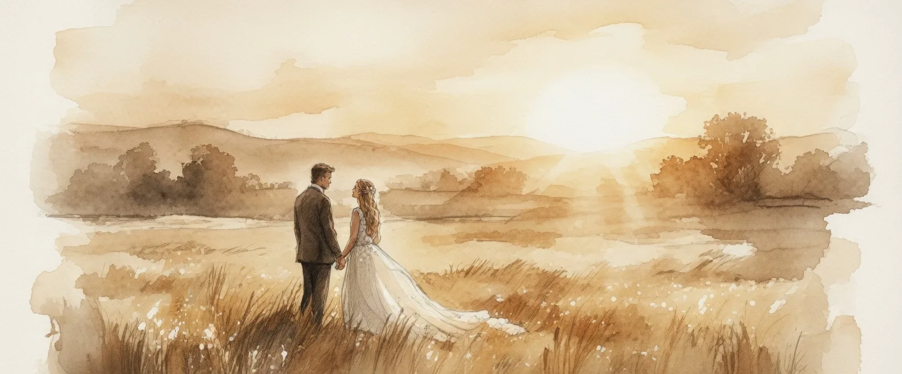

Planning Guide
Die Magie der Golden Hour
Das goldene Licht, das alles in einen sanften Schleier hüllt. Warum das Timing an eurem Hochzeitstag über die Güte eurer Bilder entscheidet — und wie ihr die schönsten Momente im warmen Abendlicht einfangt.
Weiterlesen
Heirloom
Warum ein Hochzeitsalbum?
Ein digitales Bild ist flüchtig, ein handgefertigtes Album ist ein Erbstück für Generationen. Warum es sich lohnt, eure Geschichte in etwas Bleibendem festzuhalten.
Zum Guide
Hochzeit in der Orangerie Kassel
Barocke Eleganz, Karlsaue-Licht und Räume für bis zu 300 Gäste — alles was ihr über die Orangerie als Hochzeitslocation wissen müsst.
Zum GuideTipps für das perfekte Brautpaar-Shooting
Wie ihr euch vor der Kamera wohlfühlt und wir gemeinsam echte, ungestellte Momente in Kassel kreieren.
Zum GuideWarum ein Hochzeitsalbum?
Ein digitales Bild ist flüchtig, ein handgefertigtes Album ist ein Erbstück für Generationen.
Zum Guide

Der perfekte Ablauf: Euer Wedding Timeline Guide
Ein entspannter Tag beginnt mit einer klugen Planung. Wir schauen uns an, wie viel Zeit ihr für welche Momente braucht.
Zum Guide Planning GuideDie Magie der Golden Hour
Das goldene Licht, das alles in einen sanften Schleier hüllt — warum das Timing an eurem Hochzeitstag über die Schönheit eurer Bilder entscheidet.
Weiterlesen